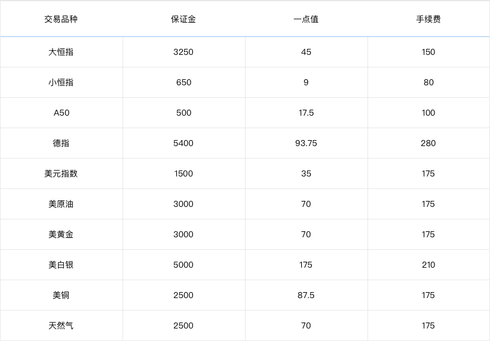

什么是CFD (差价合约) 交易
CFD（差价合约）：差价合约可以反映股票、期货或指数的价格变化并提供价格变动所带来的盈利或亏损，而无须实际拥有股票或指数期货。差价合约CFD是用保证金交易的，同股票实物交易一样，盈利或亏损是由您的买入和卖出价格决定的，差价合约CFD相对传统股票实物交易具有很多优势。
外盘CFD交易优势
双向操作
双向交易,涨跌都可赚钱
低保证金
无息融资,以小博大
T+0交易模式
短线高频操作更易快速获利
杠杆交易
低投入高收益,玩转国际市场
人人期指交易规则
右滑查看更多内容
常见问题
注册登录问题
1、如何开户交易？
在人人期指只需要注册手机号就可以开户交易，省去了繁杂的开户流程。
2、一个手机号只能开一个账户吗？
一个手机号码开一个账户，一个账户可以在多个手机上使用。
3、开户需要哪些资料？
手机号码即可。
4、手机号无法登录怎么办？
请检查手机号码和密码是否输入正确。
5、忘记登录密码如何获取？
可以用注册手机找回密码。
APP端操作流程：点击我的 —— 选择登录 —— 输入手机号码 —— 点击下一步 —— 点击忘记密码 —— 输入短信验证码——重新设置密码。
官网操作流程：点击官网页面顶部登录按钮——登录窗口中点击忘记密码——输入手机号——获取短信验证码——输入验证码——重新设置密码。
6、获取短信验证码失败怎么办？
检查是否输错手机号码。检查手机是否设置了短信拦截，关闭短信拦截，再次点击获取验证码。
充值提现问题
1、人人期指如何充值？
人人期指充值非常简单，并且可以即时到账，用户可以在人人期指官网或者手机APP进行充值操作。
APP充值操作流程：点击我的 —— 选择充值 —— 输入充值金额 —— 点击立即充值 —— 输入银行卡号 —— 获取验证码 —— 输入验证码 —— 确认付款
官网充值操作流程：点击个人中心—— 入金出金—— 输入充值金额 —— 点击立即充值 —— 输入银行卡号 —— 获取验证码 —— 输入验证码 —— 确认付款
2、为什么银行卡会充值失败？
（1）、确保银行卡号、姓名、银行预留手机号码、身份证号、开户银行是否保持一致。
（2）、确保银行卡开通了网上银行。
（3）、可以换一张银行卡试一下。
3、充值收不到验证码怎么办？
请核实手机号是否为该银行卡的绑定手机，手机是否设置短信拦截功能。
4、充值提现有什么限制吗？提现多久到账？
（1）、充值最低1元。
（2）、交易结算后、或者账户有余额，可随时申请提出现金。
（3）、单次提款金额最低10元起提，每笔提款手续费5元。提款采用银行批量转账，到账时间以银行为准，一般处理时间需要1-2个工作日，节假日将延后处理。
交易保证金费用问题
1、交易保证金是固定的还是浮动的？
目前是固定的，会根据投资人选择对应的交易手数叠加。
2、交易过程中可以追加保证金吗？
交易中不能追加保证金。如果您的可用资金充足，可以在开仓的时候，选择较大金额的止损，下单成功后，也可以修改止盈止损。
3、为什么要设置止盈止损？
止盈是指获得利润后而利润并未继续扩大, 做到见好就收, 目的是锁定盈利。止盈的作用是自我保护, 避免"过山车"式的交易，在短线交易中尤其适用。
止损是指在交易方向与市场走势相悖、导致亏损出现时, 在一定范围内设置平仓触发指令,指令触发时以市价成交, 以避免出现无法控制的损失情况。止损的作用是自我保护, "刹车装置"保存实力, 提高资金利用率。
交易相关问题
1、什么是买涨，什么是买跌？
“买涨”即低买高卖，以恒指为例，看涨的时候，以较低价格买涨开仓，等价格涨高之后再平仓，赚取差价。
“买跌”即高卖低买，以恒指为例，看跌的时候，以较高价格买跌开仓，等价格下跌之后再平仓，赚取差价。
“买跌”和商业中的赊货交易模式类似，先借货卖出，再买进归还。相当于向交易所借出并卖掉，然后需要再买回还给交易所。和“买涨”的目的是一样的，都是为了赚取差价，只是方向相反而已。
举例：小白持仓为空，通过分析趋势，看准目前恒指22650的价格要下跌，于是【买跌】1手大恒指，一小时后， 恒生指数果然下跌50个点到22600，小白平仓赚得差价=（22650-22600）×45=2250元（不计手续费）。
做多就是认为恒指要涨，就买涨做多单，做空就是认为恒指要跌，就买跌做空单。
利多就是市场上的消息有利于恒指上涨，利空就是市场上的消息有利于恒指下跌。
2、持仓盈亏是如何计算的？
美原油、美黄金、美白银、美铜、A50、美元指数、天然气是美元计价盈亏，已经在持仓里边自动按照固定的汇率换算成人民币，平仓会自动结算成人民币。恒指是以港币计价盈亏，已经在持仓里边自动按照固定的汇率换算成人民币，平仓会自动结算成人民币。德指是以欧元计价盈亏，已经在持仓里边自动按照固定的汇率换算成人民币，平仓会自动结算成人民币。
3、如何修改止盈止损？是否有限制？
下单成功后，在持仓信息里可修改止盈止损，止损有最大限制。系统默认止盈是止损的2倍，这样投资人一次盈利就可以抵消两次亏损。
4、人人期指可以交易哪些品种，每个品种的保证金，手续费是怎么样收取的？

5、什么是一点值？
就是每个交易品种波动一个点的价值，就是波动一个点可以赚或赔多少钱。
6、在哪里可以看到详细的交易规则？
左侧菜单栏中点击“人人期指交易规则”可以查看人人期指所有交易品种的详细交易规则。